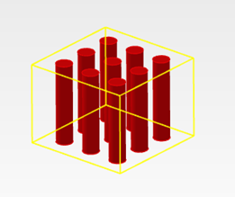
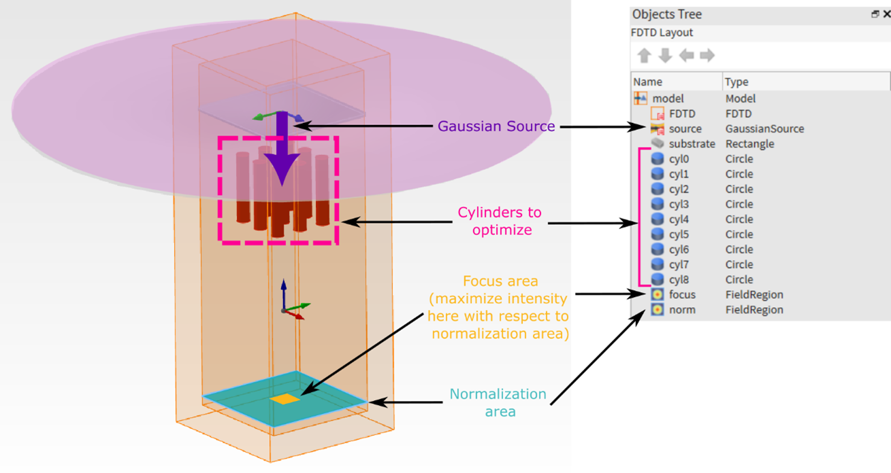
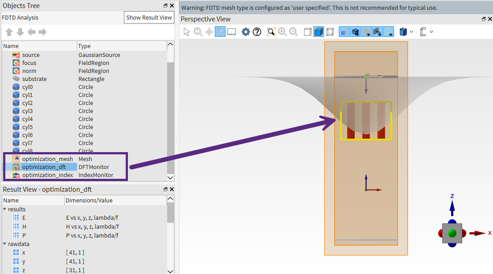
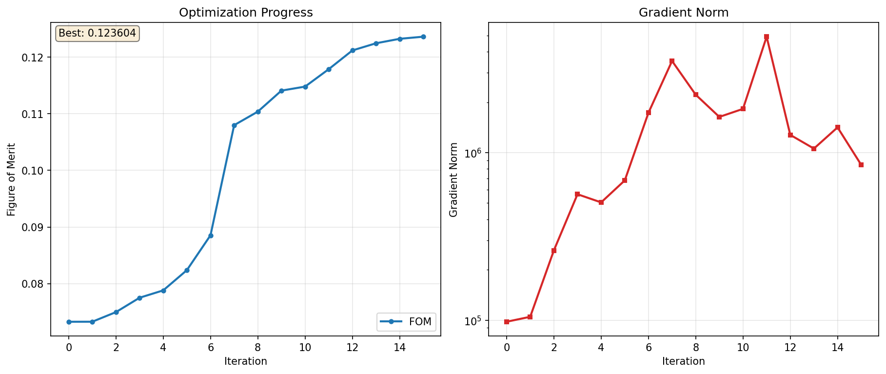

Getting started with lumopt2: simple metalens#
This article discusses the usage of the lumopt2 inverse design module in Lumerical FDTD for a basic parametric optimization.
Using a basic metalens formed by a 3x3 array of pillars, this example highlights key functionalities of the lumopt2 module and walks you through the steps necessary to create and run a simple optimization. The simulation file and script associated with this example can be downloaded using the download buttons above.
Prior to working through the example, please ensure that lumopt2 is successfully set up and importable as seen from the introduction page.
Base simulation file#
The base simulation file consists of an array of 9 silicon cylinders, arranged in a 3x3 array, embedded in an silicon oxide substrate. Each cylinder has a fixed height, but the radius can vary within set bounds for optimization. This structure mimics a simple metalens arrangements with cylindrical meta-atoms.

A Gaussian source illuminates the metalens from above. The optimization aims to maximize the field intensity in a central region of a plane below the metalens, normalized by the intensity across the full plane within the simulation region. This drives the metalens to focus the beam onto the target region.
{kind=link}

The attached Lumerical FDTD project (.fsp) file contains the already set up base simulation, with a simulation region, gaussian source, cylinder geometries, as well as field region objects that are used in the figure of merit.
This example omits the details in setting up the base simulation file, but you can do this by using the FDTD GUI interface, via the Lumerical Scripting Language, via PyLumerical, or a combination thereof. You can pre-configure your simulation as done in this example or choose to set up the simulation along side your lumopt2 optimization script.
Tip
For lumopt2 optimizations, specific objects, such as field region or ports are required for setting up the figure-of-merit.
Importing libraries#
To start using lumopt2, use the following import statement.
5import ansys.lumerical.core.lumopt2 as lmpt
The lumopt2 module exposes various important classes and functions directly from the top level namespace. For a full list of available functions, and for module level descriptions, refer to the API reference.
Optimization region setup#
Define the optimization region using the Box class.
12optimization_region = lmpt.Box(x_span = 1e-6, y_span = 1e-6, z_min = 1e-6, z_max = 1e-6 + 750e-9,
13 dx = 0.025e-6, dy = 0.025e-6, dz = 0.025e-6)
This defines a box with 1 micron side length in the x and y-diirections, and a height of 750 nm in the z-direction, covering the area where the pillar geometry is expected to change.
Note
Ensure that your optimization region fully contains all possible changes to the geometry during optimization.
Parametrization setup#
Link each cylinder radius to the optimization using the Parametrization, which maps arbitrary parameters in the optimization problem to properties of pre-existing Lumerical objects.
This class is the most general way to parametrize a design in lumopt2, and does not rely on geometry-specific operations like ClosedCurve.
Tip
For an example of setting up a parametric optimization using the ClosedCurve, see the L-bend example.
16num_cyl = 3*3
17bounds = [(0.05e-6, 0.1e-6)]*num_cyl
18def param_func(params):
19 return {f'cyl{idx}::radius': value for idx, value in enumerate(params)}
20parametrization = lmpt.Parametrization(func=param_func, bounds=bounds, optimization_region=optimization_region)
Define the bounds for each cylinder.
Here the bounds variable defines the lower and upper bound for each pillar individually. For simplicity, the same bounds are used for all pillars, by defining the tuple (lower_bound, upper_bound) and repeating it in a list for the total number of pillars.
17bounds = [(0.05e-6, 0.1e-6)]*num_cyl
The Parametrization class takes in a function, param_func that maps between the optimization parameters and the Lumerical object properties.
The function needs to map a parameter array to a dictionary, such that the keys correspond to the object properties in the Lumerical simulation, and the values are calculated from elements in the parameter array.
The mapping function is as follows.
18def param_func(params):
19 return {f'cyl{idx}::radius': value for idx, value in enumerate(params)}
For this problem, the function generates a dictionary by enumerating through the input parameter array.
The keys are in the format of cyl{idx}::radius, where the field prior to ::, such as cyl0, cyl1, corresponds to the Lumerical object names as set up in the simulation file, and the field after :: corresponds to the name of the object property.
If you set up objects in a group, the format is group_name::object_name::property_name.
Tip
You can check the list of property names for an object with the getnamed command, or through the GUI.
Finally, create the parametrization class by passing in the function that generates the map, the bounds, and the optimization region from earlier.
18parametrization = lmpt.Parametrization(func=param_func, bounds=bounds, optimization_region=optimization_region)
Figure of merit setup#
As explained before, the target of this optimization example is to maximize the ratio of the field intensity at a “focus” region compared to a normalization region.
26# Sum of field intensity at 'focus' normalized by sum of field intensity at 'norm'
27intensity_focus = lmpt.FieldResults(monitor_name='focus', metric='intensity', wavelengths = 940e-9)
28intensity_norm = lmpt.FieldResults(monitor_name='norm', metric='intensity', wavelengths = 940e-9)
29def custom_fct(result_list):
30 return result_list[0]/result_list[1]
31fom = lmpt.Fom([intensity_focus, intensity_norm], fct = custom_fct)
Here, the code defines the two simulation results using the FieldResults class, which takes in the name of a field region object, focus or norm, the result to extract, intensity, and the wavelength to extract the field at, which is 940nm.
27intensity_focus = lmpt.FieldResults(monitor_name='focus', metric='intensity', wavelengths = 940e-9)
28intensity_norm = lmpt.FieldResults(monitor_name='norm', metric='intensity', wavelengths = 940e-9)
Next, the two simulation results must be combined into a single figure of merit value, which is accomplished through a custom function.
The function assumes a list of numbers as input, which are the simulation results intensity_focus and intensity_norm in this case.
29def custom_fct(result_list):
30 return result_list[0]/result_list[1]
Finally, create the figure of merit using Fom(), with the first argument as the list of results, and the second argument as the function defined earlier to convert the results to an optimization target.
31fom = lmpt.Fom([intensity_focus, intensity_norm], fct = custom_fct)
Note
The field region object only accepts a single wavelength, but you can use multiple configurations for multiple wavelengths. The PortResults class does support multiple wavelengths directly. See the L-bend example for more details.
Project setup#
Now that the base simulation, parametrization, and figure of merit are defined, combine them all in an optimization project using the Project class.
In addition, the Project class can also be used to specify how the FDTD simulations are run via the fdtd_session and runner parameters.
34project = lmpt.Project(setup = os.path.join(cwd_path, 'metalens_3x3.fsp'), parametrization = parametrization, fom = fom,
35 fdtd_session = lmpt.FdtdSession(show_fdtd_cad = False), runner = lmpt.LocalRunner(resource = 'GPU'))
Here, the base simulation is set up via the pre-existing .fsp file, and the parametrization and figure of merit are set up as seen from previous sections. The FDTD session defined by FdtdSession specifies that the FDTD GUI will remain hidden to avoid FDTD windows popping up during the optimization.
Finally, the local runner defined by LocalRunner specifies that the first GPU resource enabled in the FDTD Resource Configuration will be used.
Tip
For further information on setting up resources, see the Resource configuration elements and controls Knowledge Base article.
Validate and run optimization#
After setting up all the optimization components, run project.visualize_fom(params=params) to validate that the set up is valid, and compute the figure of merit for the initial design.
At this point, the console launches FDTD, and displays the value of the figure of merit.
1XX:XX:XX - INFO - FDTD version '8.35.4519' meets the minimum requirement.
2XX:XX:XX - INFO - Generating optimization project...
3XX:XX:XX - INFO - FoM value is: 0.07328441206421814
4XX:XX:XX - INFO - FDTD version '8.35.4519' meets the minimum requirement.
5Press Enter to continue...
In the FDTD window that opens, you can confirm that the simulation region is in the right position using the optimization_mesh, optimization_dft, and optimization_index objects.
{kind=link}

After this validation, the optimization object is set up using the Project class from earlier, the ScipyOptimizer class for defining the optimization algorithm, and the GraphicalVisualizer class for configuring the data displayed during optimization.
The ScipyOptimizer class takes in the optimization bounds, the maximum number of iterations, and the tolerance for convergence. These are passed to the default recommended optimizer in the scipy python library, which is L-BFGS-B.
For further discussions on optimizers, see the optimizer section of the optimization session article.
41optimizer = lmpt.ScipyOptimizer(bounds = bounds, max_iter = 15, gtol = 1e-9)
42visualizer = lmpt.GraphicalVisualizer()
43optimization = lmpt.Optimization(project, optimizer, visualizer)
Finally, use the optimization.run() method to start the optimization.
44 optimization.run()
When the optimization starts, the console outputs the current progress, and a matplotlib window opens to visualize results for each iteration. A new folder is also created to store the optimization results with the name format lumopt2_project_<time_stamp>.
The optimization in this example is set to run for a maximum of 15 iterations. After each iteration, the plot updates and shows the current figure of merit value, as well as the L2 norm of the parameter gradient, calculated as \(\sqrt{\sum_i (\frac{\partial \text{FoM}}{\partial \text{Param}_i})^2}\).
Tip
You can customize the visualizer to display different metrics. For more information, see callback article.
Results#
After the optimization finishes, the final optimized parameters are displayed in the console along with the final figure of merit.
1XX:XX:XX - INFO - ============================================================
2XX:XX:XX - INFO - Optimization completed
3XX:XX:XX - INFO - Final FOM: 0.123604
4XX:XX:XX - INFO - Total iterations: 15
5XX:XX:XX - INFO - Stopping reason: STOP: TOTAL NO. OF ITERATIONS REACHED LIMIT
6XX:XX:XX - INFO - ============================================================
7XX:XX:XX - INFO - Saved optimization plot to <optimization_folder/optimization_plot_iter15.png>
8XX:XX:XX - INFO - Best parameters (9 values):
9XX:XX:XX - INFO - [ 7.61010969e-08, 1.00000000e-07, 7.66330617e-08, 5.00000000e-08, 5.18586837e-08,
10XX:XX:XX - INFO - 5.00000000e-08, 7.61160062e-08, 1.00000000e-07, 7.66139584e-08]
The final optimization plot is as follows.
{kind=link}

Tip
You can also export the optimized design back to a Lumerical FDTD project file. To do so, use the Project.save_project() method.
Further resources#
After completing this example, further explore lumopt2 using the following pages.
Reference for key concepts in lumopt2 in further detail.
Full API reference for lumopt2, including all available classes and functions.
Learn about the workflow for photonic integrated circuit through a more complex example with an L-bend.